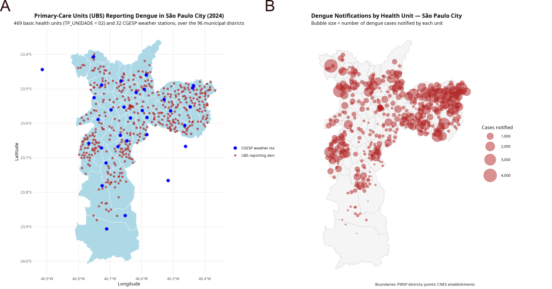
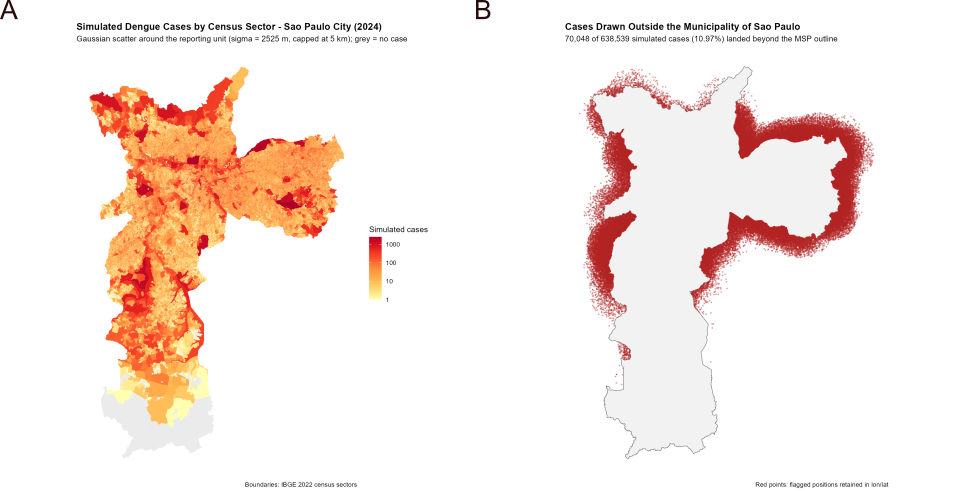

Dengue Simulation Results
Report on the dengue cases simulation model for the city of São Paulo - exploring high-resolution spatial dynamics of transmission.
Figure 1

Spatial distribution and volume of dengue cases across the 96 municipal districts of São Paulo City in 2024. (A) Maps the exact geographic locations of 469 Primary-Care Units (UBS) reporting dengue alongside 32 CGESP weather stations. (B) visualizes the magnitude of the outbreak using a proportional bubble map, where the size of each bubble corresponds to the total number of dengue cases notified by the respective health unit, with sizes scaling up to 4,000 cases.
Figure 2

Spatial overview simulation of dengue reporting across the 96 municipal districts of São Paulo City in 2024. Panel A maps the cases locations from the 469 basic health units (UBS) that reported dengue into 2022 IBGE census districts. Cases were distributed following a Gaussian distribution with a 5 km distance from the UBS restriction. Panel B visualizes the volume of these notifications outside the MSP.